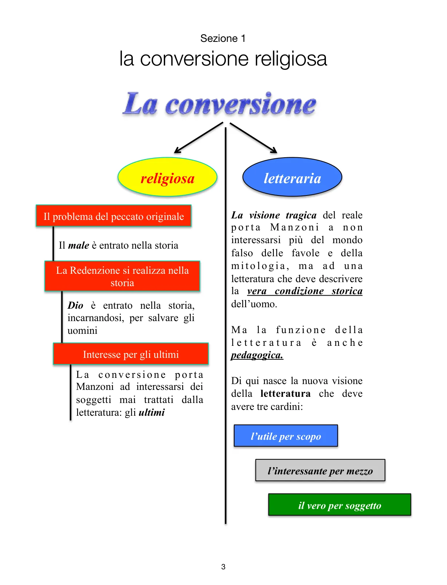

Il punto da cui tutto cambia: vita, fede, idea di male, funzione della letteratura e scelta dei soggetti.
La svolta
Manzoni distingue, nella propria maturazione, un prima e un dopo. Il punto di rottura è la conversione religiosa, che incide anche sulla letteratura. Il neoclassicismo cercava il superamento della finitezza nel mito e nella perfezione formale; Manzoni, dopo la conversione, non può più fermarsi lì. Se Dio si è incarnato nella storia, la perfezione non è più nel mito, ma nella storia stessa.
Da qui cambia anche il concetto di perfezione: non più il bello sensibile, materiale o armonico, ma la conversione. Cambiano inoltre i soggetti della letteratura: non più eroi aristocratici e violenti, ma gli ultimi, gli emarginati, gli uomini reali segnati dal male e dalla speranza di redenzione.

Schema di sintesi: conversione religiosa, problema del peccato originale, redenzione nella storia, attenzione agli ultimi.
L’episodio del 2 aprile 1810
Durante i festeggiamenti parigini per il matrimonio di Napoleone con Maria Luisa d’Austria, lo scoppio di alcuni mortaretti scatena il panico. Nella ressa Manzoni viene separato dalla moglie Enrichetta, si rifugia nella chiesa di San Rocco e, in quel silenzio improvviso, implora la grazia di ritrovarla. All’uscita la ritrova: il fatto viene assunto dalla tradizione come momento concreto della conversione.
Il dato decisivo non è solo biografico. Da quel momento Manzoni riflette in modo nuovo sul male e sulla Provvidenza: il male è reale, non va coperto con una visione consolatoria; ma Dio entra nella storia per salvare gli uomini, soprattutto gli ultimi.
Conseguenze letterarie
Formali: abbandono della perfezione stilistica neoclassica, troppo lontana dalla lingua viva.
Sostanziali: volontà di descrivere la vera condizione storica dell’uomo, senza trasfigurarla nel mito.
Funzione: la letteratura non deve più cercare il bello, ma l’utile, cioè ciò che può migliorare l’uomo.
Formula programmatica
In una lettera a Cesare d’Azeglio del 1823 Manzoni fissa le tre colonne della nuova letteratura:
L’utile per scopo - la scrittura deve avere una funzione pedagogica.
L’interessante per mezzo - deve coinvolgere il lettore, non restare fredda o aristocratica.
Il vero per soggetto - la materia deve venire dalla storia, dalla vita, dal reale.